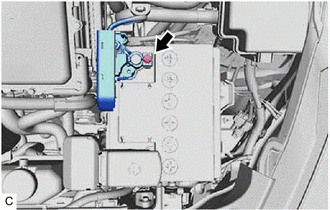
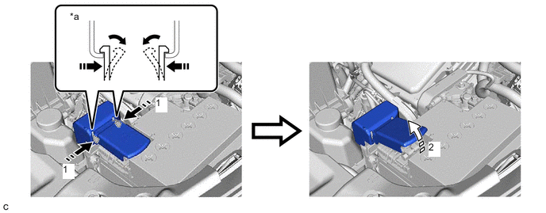
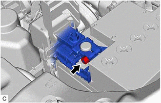
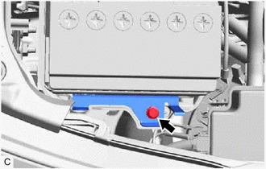
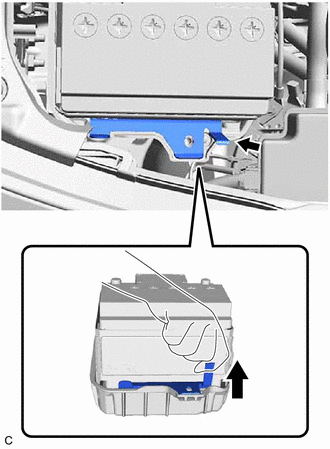

AUXILIARY BATTERY REMOVAL
CAUTION / NOTICE / HINT
The necessary procedures (adjustment, calibration, initialization or registration) that must be performed after parts are removed and installed, or replaced during auxiliary battery removal/installation are shown below.
| Replaced Part or Performed Procedure | Necessary Procedure | Effect/Inoperative Function when Necessary Procedure not Performed | Link |
|---|---|---|---|
| Auxiliary battery terminal is disconnected/reconnected | Memorize steering angle neutral point | Lane departure alert system (w/ Steering Control) | |
| Intelligent clearance sonar system*1 | |||
| Simple intelligent parking assist system*1 | |||
| Pre-crash safety system | |||
| Adaptive high beam system | |||
| Parking assist monitor system | |||
| Initialize back door lock | Power door lock control system |
*1: When performing learning using the GTS.
PROCEDURE
-
PRECAUTION
Note
-
After turning the power switch off, waiting time may be required before disconnecting the cable from the negative (-) auxiliary battery terminal. Therefore, make sure to read the disconnecting the cable from the negative (-) auxiliary battery terminal notices before proceeding with work.
-
When replacing the auxiliary battery, use a new auxiliary battery of the same dimensions with a capacity of 51 Ah or more at a 20-hour rate.
-
-
DISCONNECT CABLE FROM NEGATIVE AUXILIARY BATTERY TERMINAL
-

Loosen the nut, and disconnect the cable from the negative (-) auxiliary battery terminal.
Note
When disconnecting the cable, some systems need to be initialized after the cable is reconnected.
-
-
REMOVE AUXILIARY BATTERY
-
Disengage the 2 claws and open the battery terminal cap in the order shown in the illustration.

*a Top View of Claws - - 
Push Battery Terminal Cap Here 
Push 
Open - - -

Loosen the nut and disconnect the cable from the positive (+) auxiliary battery terminal.
-

Remove the bolt.
-

Remove the No. 2 battery clamp as shown in the illustration.
-
Remove the auxiliary battery.
-
Remove the battery insulator from the auxiliary battery.
-